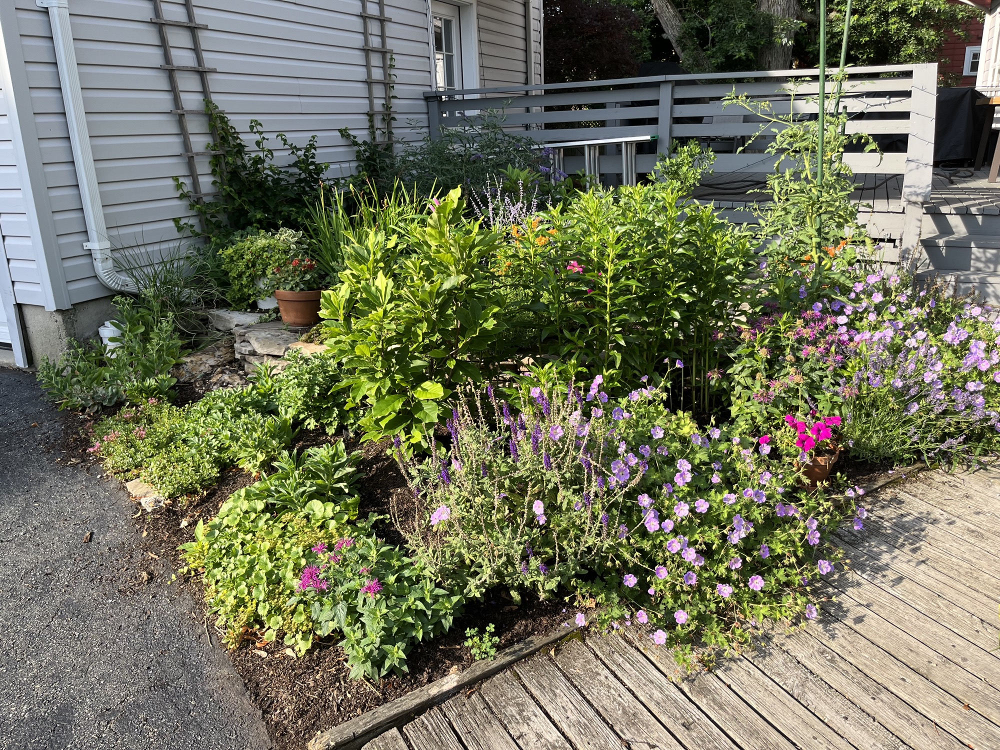
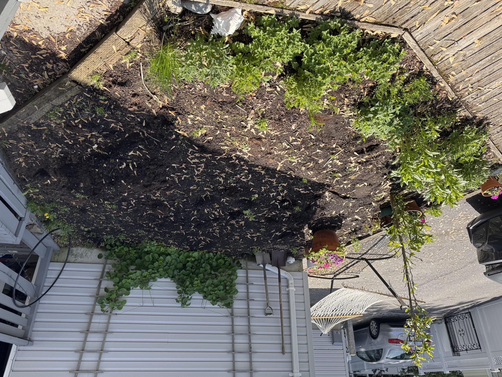
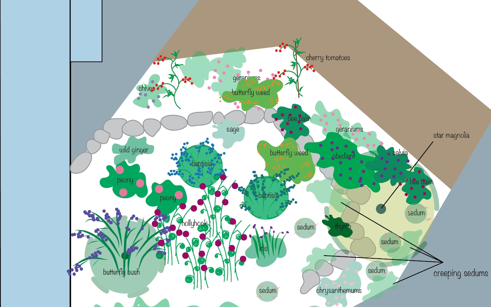

My client had an area of their property (~250 sq ft) that used to be dominated by a massive maple tree. They had hired a crew to grind down the tree stump, but much of the area was left with only an inch of soil on top of root. I leveled out a lower bed, and raised the rest of the bed 8–12" with a compost/soil mix. I built a fieldstone rock wall to structure the terraced garden.
I prioritized plants that could tolerate compacted, root-filled soil while still offering seasonal interest.
Butterfly bush, star magnolia
Peony, butterfly weed, baptisia, bee balm, wild geranium, chives, hollyhock, iris, salvia, sedum, broadleaf stonecrop, sage, thyme, European wild ginger, climbing hydrangea

Below is the design and planting plan I provided to the client before diving into installation.

Gemma transformed a bare patch of dirt into the most beautiful part of our outdoor space. Throughout the project, Gemma was efficient, tidy, communicative, and attentive to what we wanted. She listened carefully to our ideas, then brought her own design expertise and creativity to make the final result better than we ever could have imagined. She was also transparent and clear about pricing from the beginning, and the finished project was both affordable and absolutely beautiful. Everyone who sees it comments on how beautiful it is.
We're thrilled with the craftsmanship and the transformation of the space. We would highly recommend Gemma to anyone looking for a thoughtful, skilled, and reliable landscaper.
— Katie Gribben & Alex Millner